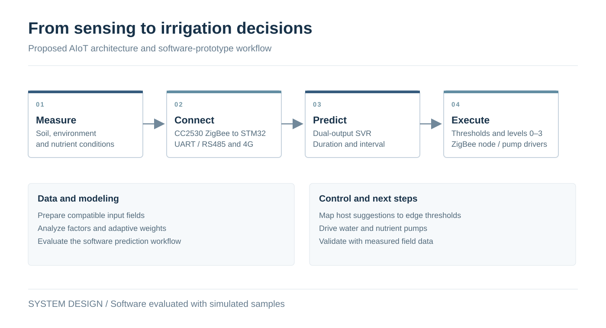

工程项目
AIoT 智慧水肥系统
交通与电气工程学院
大连科技学院
AIoT 项目

项目概述
本项目结合 AIoT 系统设计与灌溉决策软件，通过双输出支持向量回归模型，依据环境输入与灌溉历史预测建议灌溉时长和下次灌溉间隔。
系统设计将连续模型输出映射为少量边缘执行等级，连接上位机预测与 STM32 控制端。
相关农业灌溉喷头的外观设计专利申请已受理，详见相关喷头设计。
系统架构
项目大纲 3.0 规定采用基于 CC2530 的星型 ZigBee 网络，采集土壤湿度、土壤 pH/EC、空气温湿度、光照、营养液 pH/EC 和液位。协调器将信息交给 STM32，再通过 UART 或 RS-485 接入 4G-DTU 和上位机。
上位机运行决策流程，经 APP、网页或组态界面显示测量值、告警并接收人工指令；建议值沿 4G 链路返回，更新 STM32 的三个阈值。控制器将决策映射为 0—3 级执行，再经 ZigBee 执行节点与 TB6612 驱动清水泵、肥液泵。
自动循环与人工干预共用上述链路。图中表达系统设计，其中双输出 SVR 用于软件决策流程。

我的工作
我设计技术方案、开发模型流程、开展软件验证并整理项目交付材料，将通信与控制设计同软件模型的输入、输出建立对应关系。
模型流程结合主导因素分析、自适应融合权重和双输出 SVR，便于检查各因素对灌溉决策的贡献。
软件验证
模型流程使用与系统字段兼容的 2160 条模拟样本开展评估，分别检验灌溉时长和下次灌溉间隔两个回归目标。
该流程将双输出预测接入灌溉时长与间隔的决策逻辑。
相关灌溉喷头设计
相关农业灌溉喷头设计已提交中国外观设计专利申请，申请号为 202630288223.6，申请日为 2026 年 6 月 6 日，申请已获受理。我是申请人及列明的设计人之一，其他设计人为徐智超、杜铂瀚和李佳怡。
相关项目“无源均压抗堵可调式农业灌溉喷头”于 2026 年 10 月获得辽宁省创新方法大赛创新设计类三等奖，我是参赛成员之一。